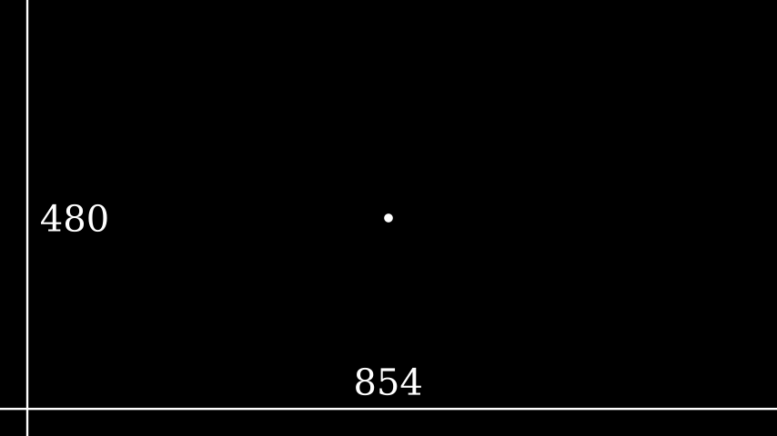

配置
Manim 提供了广泛的配置系统，使其能够适应许多不同的用例。有许多配置选项可以在场景渲染过程中的不同时间进行配置。每个选项都可以通过 ManimConfig 类以编程方式进行配置，在通过命令行参数调用命令时，或者在首次通过配置文件导入库时。
配置 Manim 最常见、最简单且推荐的方法是通过命令行界面 (CLI)，如下所述。
命令行参数
到目前为止，CLI 中最常用的命令是命令render，该命令用于将场景渲染到输出文件。它与以下参数一起使用：
| Bash |
|---|
| Manim Community v0.17.3
Usage: manim render [OPTIONS] FILE [SCENE_NAMES]...
Render SCENE(S) from the input FILE.
FILE is the file path of the script or a config file.
SCENES is an optional list of scenes in the file.
...
|
但是，由于只要未指定命令，Manim 就会默认使用该render命令，因此以下形式更为常见，可以改为使用：
| Bash |
|---|
| manim [OPTIONS] FILE [SCENES]
|
使用上述形式的一个例子是：
| Bash |
|---|
| manim -qm file.py SceneOne
|
这要求 Manim 搜索SceneOne文件内调用的 Scene 类file.py，并以中等质量（由标志指定）渲染它-qm。
另一个经常使用的标志是-p（“预览”），它使 manim 在渲染完成后打开渲染的视频。
笔记
该-p标志不会更改全局 config字典的任何属性。该-p标志只是为了命令行的方便。
高级示例
要以高质量渲染场景，但仅输出场景的最后一帧而不是整个视频，您可以执行
| Bash |
|---|
| manim -sqh <file.py> SceneName
|
以下示例指定输出文件名（带有标志），仅渲染带有白色背景（标志）的-o 前十个动画（标志），并将动画保存为 a 而不是 文件（标志）。它使用默认质量，并且在渲染后不会尝试打开文件。-n``-c``.gif``.mp4``--format=gif
| Bash |
|---|
| manim -o myscene --format=gif -n 0,10 -c WHITE <file.py> SceneName
|
所有 CLI 标志的列表
| Bash |
|---|
| $ manim --help
Manim Community v0.17.3
Usage: manim [OPTIONS] COMMAND [ARGS]...
Animation engine for explanatory math videos.
Options:
--version Show version and exit.
--help Show this message and exit.
Commands:
cfg Manages Manim configuration files.
init Create a new project or insert a new scene.
new (Deprecated) Create a new project or insert a new scene.
plugins Manages Manim plugins.
render Render SCENE(S) from the input FILE.
See 'manim <command>' to read about a specific subcommand.
Note: the subcommand 'manim render' is called if no other subcommand is
specified. Run 'manim render --help' if you would like to know what the '-ql' or
'-p' flags do, for example.
Made with <3 by Manim Community developers.
|
| Bash |
|---|
| $ manim render --help
Manim Community v0.17.3
Usage: manim render [OPTIONS] FILE [SCENE_NAMES]...
Render SCENE(S) from the input FILE.
FILE is the file path of the script or a config file.
SCENES is an optional list of scenes in the file.
Global options:
-c, --config_file TEXT Specify the configuration file to use for
render settings.
--custom_folders Use the folders defined in the [custom_folders]
section of the config file to define the output
folder structure.
--disable_caching Disable the use of the cache (still generates
cache files).
--flush_cache Remove cached partial movie files.
--tex_template TEXT Specify a custom TeX template file.
-v, --verbosity [DEBUG|INFO|WARNING|ERROR|CRITICAL]
Verbosity of CLI output. Changes ffmpeg log
level unless 5+.
--notify_outdated_version / --silent
Display warnings for outdated installation.
--enable_gui Enable GUI interaction.
--gui_location TEXT Starting location for the GUI.
--fullscreen Expand the window to its maximum possible size.
--enable_wireframe Enable wireframe debugging mode in opengl.
--force_window Force window to open when using the opengl
renderer, intended for debugging as it may
impact performance
--dry_run Renders animations without outputting image or
video files and disables the window
Output options:
-o, --output_file TEXT Specify the filename(s) of the rendered
scene(s).
-0, --zero_pad INTEGER RANGE Zero padding for PNG file names. [0<=x<=9]
--write_to_movie Write the video rendered with opengl to a file.
--media_dir PATH Path to store rendered videos and latex.
--log_dir PATH Path to store render logs.
--log_to_file Log terminal output to file.
Render Options:
-n, --from_animation_number TEXT
Start rendering from n_0 until n_1. If n_1 is
left unspecified, renders all scenes after n_0.
-a, --write_all Render all scenes in the input file.
--format [png|gif|mp4|webm|mov]
-s, --save_last_frame
-q, --quality [l|m|h|p|k] Render quality at the follow resolution
framerates, respectively: 854x480 15FPS,
1280x720 30FPS, 1920x1080 60FPS, 2560x1440
60FPS, 3840x2160 60FPS
-r, --resolution TEXT Resolution in "W,H" for when 16:9 aspect ratio
isn't possible.
--fps, --frame_rate FLOAT Render at this frame rate.
--renderer [cairo|opengl] Select a renderer for your Scene.
-g, --save_pngs Save each frame as png (Deprecated).
-i, --save_as_gif Save as a gif (Deprecated).
--save_sections Save section videos in addition to movie file.
-s, --save_last_frame Save last frame as png (Deprecated).
-t, --transparent Render scenes with alpha channel.
--use_projection_fill_shaders Use shaders for OpenGLVMobject fill which are
compatible with transformation matrices.
--use_projection_stroke_shaders
Use shaders for OpenGLVMobject stroke which are
compatible with transformation matrices.
Ease of access options:
--progress_bar [display|leave|none]
Display progress bars and/or keep them
displayed.
-p, --preview Preview the Scene's animation. OpenGL does a
live preview in a popup window. Cairo opens the
rendered video file in the system default media
player.
-f, --show_in_file_browser Show the output file in the file browser.
--jupyter Using jupyter notebook magic.
Other options:
--help Show this message and exit.
Made with <3 by Manim Community developers.
|
| Bash |
|---|
| $ manim cfg --help
Manim Community v0.17.3
Usage: manim cfg [OPTIONS] COMMAND [ARGS]...
Manages Manim configuration files.
Options:
--help Show this message and exit.
Commands:
export
show
write
Made with <3 by Manim Community developers.
|
| Bash |
|---|
| $ manim plugins --help
Manim Community v0.17.3
Usage: manim plugins [OPTIONS]
Manages Manim plugins.
Options:
-l, --list List available plugins.
--help Show this message and exit.
Made with <3 by Manim Community developers.
|
ManimConfig 类
配置 Manim 最直接的方法是通过全局config对象，它是ManimConfig. 此类的每个属性都是一个配置选项，可以使用标准属性语法或类似字典的语法来访问：
| Bash |
|---|
| >>> from manim import *
>>> config.background_color = WHITE
>>> config["background_color"] = WHITE
|
笔记
前者是优选的；提供后者是为了向后兼容。
大多数类（包括Camera、Mobject和 Animation）从全局 中读取一些默认配置 config。
| Bash |
|---|
| >>> Camera({}).background_color
<Color white>
>>> config.background_color = RED # 0xfc6255
>>> Camera({}).background_color
<Color #fc6255>
|
ManimConfig旨在保持内部一致性。例如，设置frame_y_radius将影响frame_height：
| Bash |
|---|
| >>> config.frame_height
8.0
>>> config.frame_y_radius = 5.0
>>> config.frame_height
10.0
|
全局config对象是所有配置选项的单一事实来源。设置配置选项的所有其他方法最终都会更改全局对象的值config。
以下示例说明了为使用参考帧在我们的文档中呈现的示例选择的视频分辨率。
示例：显示屏幕分辨率

| Python |
|---|
| from manim import *
class ShowScreenResolution(Scene):
def construct(self):
pixel_height = config["pixel_height"] # 1080 is default
pixel_width = config["pixel_width"] # 1920 is default
frame_width = config["frame_width"]
frame_height = config["frame_height"]
self.add(Dot())
d1 = Line(frame_width * LEFT / 2, frame_width * RIGHT / 2).to_edge(DOWN)
self.add(d1)
self.add(Text(str(pixel_width)).next_to(d1, UP))
d2 = Line(frame_height * UP / 2, frame_height * DOWN / 2).to_edge(LEFT)
self.add(d2)
self.add(Text(str(pixel_height)).next_to(d2, RIGHT))
|
配置文件
正如最后一个示例所示，从命令行执行 Manim 可能涉及同时使用许多标志。如果您必须在短时间内多次执行相同的脚本（例如，对场景脚本进行小的增量调整时），这可能会变得很麻烦。因此，Manim 也可以使用配置文件进行配置。配置文件是以.cfg.
manim.cfg要在渲染场景时使用本地配置文件，您必须在与场景代码相同的目录中创建一个同名的文件。
警告
配置文件必须命名为manim.cfg. 目前，Manim 不支持任何其他名称的配置文件。
配置文件必须以节头开始[CLI]。此标头下的配置选项与 CLI 标志具有相同的名称并具有相同的用途。以以下配置文件为例。
| INI |
|---|
| [CLI]
# my config file
output_file = myscene
save_as_gif = True
background_color = WHITE
|
配置文件使用标准 python 库进行解析configparser。特别是，他们将忽略任何以井号符号开头的行#。
现在，执行以下命令
| Bash |
|---|
| manim -o myscene -i -c WHITE <file.py> SceneName
|
相当于执行以下命令，前提是manim.cfg 与在同一目录中，
| Bash |
|---|
| manim <file.py> SceneName
|
提示
配置文件中允许的配置选项的名称与相应命令行标志的长名称完全相同。例如，-c和--background_color标志是可以互换的，但配置文件仅接受 background_color作为可接受的选项。
由于配置文件旨在替换 CLI 标志，因此所有 CLI 标志都可以通过配置文件设置。此外，任何配置选项都可以通过配置文件设置，无论它是否具有关联的 CLI 标志。有关所有 CLI 标志和配置选项的列表，请参阅本文档底部。
manim.cfgManim 将在与正在渲染的文件相同的目录中查找配置文件，而不是在执行目录中。例如，
| Bash |
|---|
| manim -o myscene -i -c WHITE <path/to/file.py> SceneName
|
将使用 中找到的配置文件path/to/file.py（如果有）。它不会使用 当前工作目录中找到的配置文件，即使它存在。这样，用户可以为不同的场景或项目保留不同的配置文件，并在系统的任何位置以正确的配置执行它们。
此处描述的文件称为文件夹范围的配置文件，因为它影响同一文件夹中找到的所有场景脚本。
用户配置文件
如上一节所述，manim.cfg配置文件仅影响同一文件夹中的场景脚本。但是，用户还可以创建一个特殊的配置文件，该文件将应用于该用户渲染的所有场景。这称为用户范围的配置文件，无论 Manim 从何处执行，也无论场景脚本存储在何处，它都将适用。
用户范围的配置文件位于一个特殊的文件夹中，具体取决于操作系统。
- Windows：
UserDirectory/AppData/Roaming/Manim/manim.cfg
- MacOS：
UserDirectory/.config/manim/ manim.cfg
- Linux：
UserDirectory/.config/manim/ manim.cfg
这里UserDirectory是用户的主文件夹。
笔记
用户可能有许多文件夹范围的配置文件，每个文件夹一个，但只有一个用户范围的配置文件。同一台计算机上的不同用户可能都有自己的用户范围配置文件。
警告
不要将场景脚本存储在与用户范围配置文件相同的文件夹中。在这种情况下，行为是未定义的。
每当您从系统中的任何位置使用 Manim 时，Manim 都会查找用户范围的配置文件并读取其配置。
级联配置文件
如果您执行 Manim 并且它同时找到文件夹范围的配置文件和用户范围的配置文件，会发生什么？Manim 将读取这两个文件，但如果它们不兼容，则文件夹范围的文件优先。
例如，采用以下用户范围的配置文件
| INI |
|---|
| # user-wide
[CLI]
output_file = myscene
save_as_gif = True
background_color = WHITE
|
以及以下文件夹范围的文件
| INI |
|---|
| # folder-wide
[CLI]
save_as_gif = False
|
那么执行就相当于不使用任何配置文件并执行manim <file.py> SceneName
| Bash |
|---|
| manim -o myscene -c WHITE <file.py> SceneName
|
任何命令行标志都优先于任何配置文件。例如，使用前面两个配置文件并执行相当于不使用任何配置文件并执行manim -c RED <file.py> SceneName
| Bash |
|---|
| manim -o myscene -c RED <file.py> SceneName
|
还有一个库范围的配置文件，它确定 Manim 的默认行为并适用于库的每个用户。它的优先级最低，因此用户范围内的任何配置选项和任何文件夹范围的文件都将覆盖库范围的文件。这称为级联 配置文件系统。
警告
用户不应尝试修改库范围的文件。贡献者在修改之前应得到核心开发团队的明确确认。
操作顺序
无法在“XMLSerializer”上执行“serializeToString”：参数 1 不是“Node”类型。
由于配置 Manim 的方式多种多样，因此很难知道每个配置选项的设置时间。事实上，这取决于 Manim 的使用方式。
如果 Manim 是从模块导入的，那么配置系统将遵循以下步骤：
- 加载库范围的配置文件。
- 如果存在用户范围和文件夹范围的文件，则会加载它们。
- 前两个步骤中找到的所有文件都在单个
ConfigParser对象中进行解析，称为parser. 这就是级联 发生的地方。
logging.Logger被实例化以创建 Manim 的全局logger 对象。它是使用解析器的“logger”部分配置的，即parser['logger']。ManimConfig被实例化以创建全局config对象。- from
parser步骤 3 通过 馈送到configfrom 步骤 5 ManimConfig.digest_parser()。
- 和
logger都config暴露给用户。
如果从命令行调用 Manim，则前面的所有步骤都会发生，并由以下内容补充：
- CLI 标志被解析并输入到
configvia 中digest_args()。
- 如果
--config_file使用了该标志，ConfigParser则会使用库范围文件、用户范围文件（如果存在）以及通过--config_file. 在这种情况下，文件夹范围的文件（如果存在）将被忽略。
-
新的解析器被输入到config.
-
其余 CLI 标志均已处理。
总而言之，配置选项的优先级顺序（从最低优先级到最高优先级）是：
- 库范围的配置文件，
- 用户范围的配置文件，如果存在，
- 文件夹范围的配置文件（如果存在）或自定义配置文件（如果通过）传递
--config_file，
- 其他 CLI 标志，以及
- 设置配置系统后进行的任何编程更改。
所有配置选项的列表
| INI |
|---|
| ['aspect_ratio', 'assets_dir', 'background_color', 'background_opacity',
'bottom', 'custom_folders', 'disable_caching', 'dry_run',
'ffmpeg_loglevel', 'flush_cache', 'frame_height', 'frame_rate',
'frame_size', 'frame_width', 'frame_x_radius', 'frame_y_radius',
'from_animation_number', `fullscreen`, 'images_dir', 'input_file', 'left_side',
'log_dir', 'log_to_file', 'max_files_cached', 'media_dir', 'media_width',
'movie_file_extension', 'notify_outdated_version', 'output_file', 'partial_movie_dir',
'pixel_height', 'pixel_width', 'plugins', 'preview',
'progress_bar', 'quality', 'right_side', 'save_as_gif', 'save_last_frame',
'save_pngs', 'scene_names', 'show_in_file_browser', 'sound', 'tex_dir',
'tex_template', 'tex_template_file', 'text_dir', 'top', 'transparent',
'upto_animation_number', 'use_opengl_renderer', 'verbosity', 'video_dir',
'window_position', 'window_monitor', 'window_size', 'write_all', 'write_to_movie',
'enable_wireframe', 'force_window']
|
访问 CLI 命令选项
输入manim, 或, 将打开主帮助页面。manim --help
| Bash |
|---|
| Usage: manim [OPTIONS] COMMAND [ARGS]...
Animation engine for explanatory math videos.
Options:
--version Show version and exit.
--help Show this message and exit.
Commands:
cfg Manages Manim configuration files.
init Sets up a new project in current working directory with default
settings.
It copies files from templates directory and pastes them in the
current working dir.
new Create a new project or insert a new scene.
plugins Manages Manim plugins.
render Render SCENE(S) from the input FILE.
See 'manim <command>' to read about a specific subcommand.
Made with <3 by Manim Community developers.
|
每个子命令都有自己的帮助页面，可以类似地访问：
| Bash |
|---|
| manim render
manim render --help
|